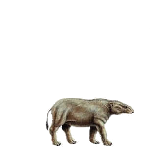
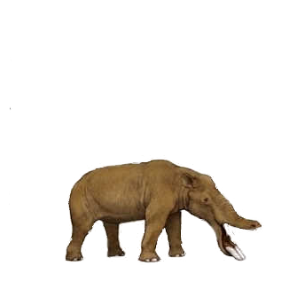
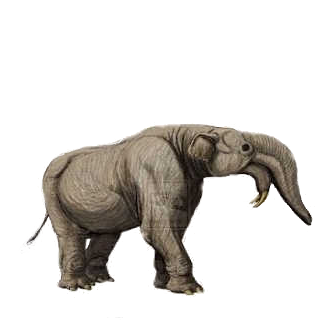
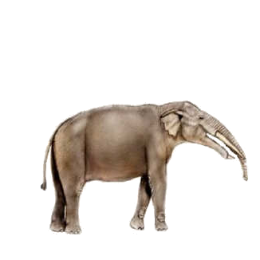
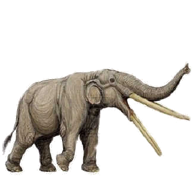
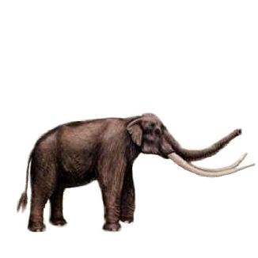
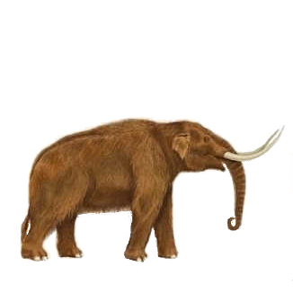
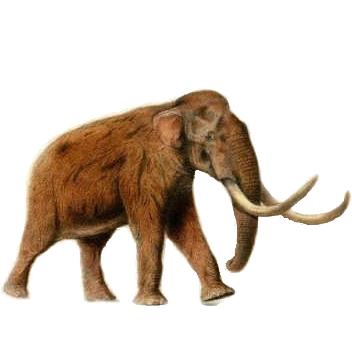
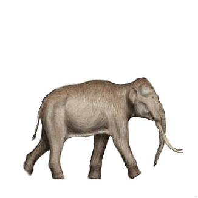
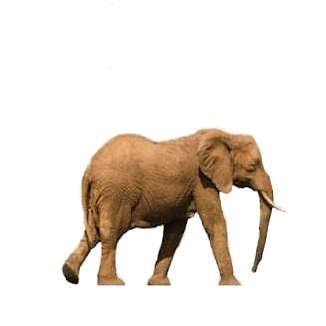

African elephants are family-oriented animals with a complex social structure. There are two types of herds — females with their young and bachelor herds — and lone males. Females remain with their natal group for life, sharing responsibility for calves, and males leave the herd once they reach maturity. Elephants are a keystone species and dramatically affect their landscape. They are seed dispersers and influence forest composition, creating clearings to boost tree regrowth and reducing cover to create suitable habitat for browsing and grazing animals.
-
Moeritherium ('the beast from Lake Moeris')
 37-35 million years ago
Hight: 2.3 feet; Weight: 235 kg
They did not have an elephant-like trunk, may have had a broad flexible upper lip like a tapir's for grasping aquatic vegetation.
The second incisor teeth formed small tusks, although these would have looked more like the teeth of a hippo than a modern elephant. -
Amebelodon (the so-called shovel-tusker)
 9-6 million years ago
Height: 8 - 10 feet; Weight: 11 tons
It had two pairs of tusks, one in the upper jaw and one pair in the lower.
The lower pair of tusks were shaped to form a shovel-like structure that pointed forwards from the lower jaw. It is widely believed that these tusks allowed Amebelodon to uproot plants and scrape off tree bark. -
Deinotherium ("terrible beast")
 late Miocene until the genus' extinction during the Early Pliocene
Height: 10-16 feet; Weight: up to 13 tons. Length: up to 23 feet
It was perhaps one of the most biggest hairless elephants of all time.
Resembled modern elephants, except that its trunk was shorter, and it had downward curving tusks attached to the lower jaw.
The tusks were used to root in soil for underground plant parts, pull down branches to snap them and reach leaves, or strip soft bark from tree trunks. -
Gomphotherium ("Welded Beast")
 13.65-3.6 million years ago
Hight: 10 feet; Weight: 4-5 tons
It had four tusks, two on the upper jaw and two on the elongated lower jaw.
The lower tusks are parallel and shaped like a shovel and were probably used for digging up food from mud. Unlike modern elephants, the upper tusks were covered by a layer of enamel.
These animals had a short trunk, rather like a tapir's. Probably lived in swamps or near lakes, using their tusks to dig or scrape up aquatic vegetation -
Stegotetrabelodon
 6-8 million years ago
High: 13 feet; Weight: 9 tons
They are the earliest direct evidence of how the ancestors of modern elephants interacted socially, and the oldest evidence of an elephant herd.
It had four tusks - two in the top jaw and two in the bottom - and seems to have been larger than modern elephants, judging from the track measurements -
Stegodon
 until 4,100 years ago
High: 13 feet; Weight: 12.7 tons; Length: 26 feet
They had 3 m long straight tusks.
In some individuals, the tusks were so close together that the trunk probably did not lie between them but instead draped over.
Stegodon floresiensis was very much smaller, estimated to weigh about 300 kilograms. They have undergone island dwarfism in Indonesia due to small area and fewer resources.
Remains bearing cut marks have been found suggesting that the dwarf Stegodon was prey for the humans. -
Mastodon ("Nipple Tooth")
 late Miocene or late Pliocene up to 10,000 to 11,000 years ago
High: 8-10 feet; Weight: 5-8 tons
Famous for their long, curved, dangerous-looking tusks probably evolved as a sexually selected characteristic. Females did not have tusks.
They had thick coats of shaggy hair, to protect them from the intense cold of Pleistocene North America and Eurasia.
Lived in herds and were predominantly forest dwelling animals that fed on a mixed diet obtained by browsing and grazing. They typically inhabited spruce woodlands around valleys and swamps. -
Mammuthus
 5 million - 4,500 years ago
Height: 13 feet; Weight: up to 13 tons
The most popular is Mammuthus primigenius known as the woolly mammoth that today is regarded as the poster animal for the ice age.
It had small ears which were only thirty centimetres long and the long shaggy coat of hair over its body, up to meter long to provide the main insulation from the cold.
The unique characteristics were spirally, twisting tusks. The tusks could sweep off the fresh covering of snow and get at the grass underneath. -
Elephas antiquus (the straight-tusked elephant)
 781,000–50,000 years ago
Height : 13 feet; Weight: 12 tons
In 2016, DNA sequence analysis showed that its closest extant relative is the African forest elephant.
It had long, slightly upward-curving tusks.
Legs were slightly longer than those of modern elephants.
It had an 80-cm-long tongue that could be projected a short distance from the mouth to grasp leaves and grasses. With this tongue and a flexible trunk, straight-tusked elephants could graze or browse about 8 m above ground. It became extinct in Britain by the beginning of the last glacial and replaced by the mammoth. -
African elephant
 Loxodonta (Modern elephant)
Their thickset bodies rest on stocky legs, and they have concave backs. Their large ears enable heat loss.
The upper lip and nose form a trunk. The trunk ends in two opposing lips and acts as a fifth limb, a sound amplifier, and an important method of touch.
The elephants' tusks are firm teeth; the second set of incisors become the tusks. They are used for digging for roots and stripping the bark from trees for food; for fighting each other during mating season; and for defending themselves against predators.
Their tusks are curved forward and continue to grow throughout the elephant's lifetime. Elephants replace their teeth four to six times in their lifetime. At about 40 to 60 years of age, the elephant loses the last of its molars and will likely die of starvation, a common cause of death.